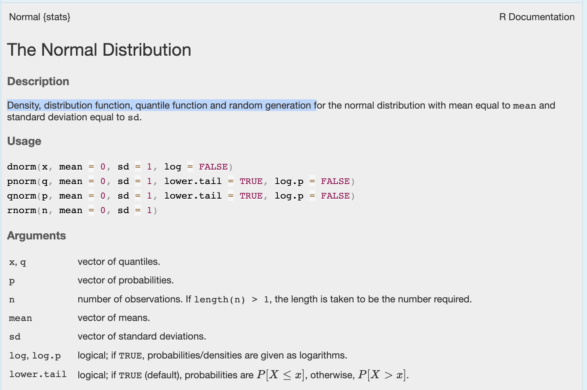

4 Coding
4.1 Quick reminder
mean() FUNCTION: something R does
mean(mpg$year) ARGUMENT: tell the function what to use
Sys.Date() SPECIAL CASE: a function that needs no argument
COMMANDS ARE CASE SENSITIVE!
mpg$year $: choose a column by name
mpg[2, 3] [row, column]: choose data by position
mean_year <- mean(...) <- : save the result
?mean ?: open the help fileThese few pieces of syntax will appear again and again throughout the course.
4.2 Functions / Commands
Commands, often called functions, are the verbs of “speaking R”. They are actions: things you want R to do.
Three useful things to know:
Functions have parentheses
( )after their name. This is one way to recognise that something is a function.Most functions need some information from you. This information goes inside the parentheses.
You can look at the help file for a function by typing
?followed by its name into the Console, for example?mean.
You can also search for functions in the Help tab in RStudio.
4.3 Giving information to a function: arguments
Most commands need some information from you, which you put inside the parentheses ( ). These are called arguments. You separate them with a comma and you can find out whats available using the help file.
For example, the round() function tells R to round numbers to a pre-specified number of decimal places.
round(1.6722615, digits=3)## [1] 1.672Here we have told R to round the number 1.6722615 to three decimal places:
round()is the command/function.1.6722615is the first argument, the number we want to round.digits = 3is the second argument; we want to round to three decimal places
As a second example
rnorm(n = 5, mean = 10, sd = 2)## [1] 9.562586 8.593312 7.861588 7.265712 7.637137Here we have told R: to randomly select 5 values from a normal distribution that has a mean of 10, and a standard deviation of 2.
The command/function is
rnorm()`The arguments are
n=5(the number of values we want), thenmean=10andsd=2, the mean and standard distribition of the normal distribution to extract the values from.
4.3.1 Commands are case sensitive!
round() is not the same as Round() , ROUND() or roUnd() !
You will get an error if you type the wrong one.
Some commands have capital letters in them and won’t work if you miss them out. For example Sys.Date() is correct, sys.date() is wrong.
4.3.2 But you can put them on different lines..
R doesn’t look for the end of the line to know when a command is finished, it looks for the closing ).
So this will run fine for example, and is often a way of making your code more readable:
# make 20 random numbers from a normal distribution with mean=10 and sd=3, then save them as the variable output.
output <- rnorm(n=20,
mean=10,sd=3)4.3.3 Working out the arguments
All R commands have a help file, some more complex than others! This always tells you the name and purpose of the command, then has a list of variables (and the default value if you choose to not type anything). Sometimes it also adds in several related commands into one help file.
For example, take a look at the rnorm help file by typing its name into the console with a ? in front.
?rnormYou should see this. Exactly what the commands do is often hidden in the description! In this case you can see that
-
dnorm()calculates the density of the Normal Distribution (e.g. it draws the shape of it) -
pnorm()calculates the probability distribution function of the Normal Distribution -
qnorm()calculates the quantiles of the Normal Distribution -
rnorm()randomly generates numbers from the Normal Distribution
In all cases, the command assumes that the mean is 0 and the standard deviation is 1. ChatGPT/Claude can help you interpret these!

4.3.4 A special case: functions with empty ( )
Some functions don’t need any extra information from you. These are a special case where the parentheses can be left empty. Even though there is nothing inside the parentheses, you still need the ( ) because these are functions.
For example, try typing these exactly into your console
Sys.Date()
getwd()
file.choose()Sys.Date()tells you today’s date.getwd()tells you the folder R is currently working in.file.choose()is interactive! It opens a window allowing you to choose a file, then writes out its location on your computer.
4.4 Stacking commands
You can put commands inside of commands! It starts from the inside and works out. For example,
This FIRST generates 5 numbers from a normal distribution with mean=10 and sd=2.
THEN it rounds each of those 5 numbers to 3 decimal places
## [1] 9.185 11.660 10.860 10.610 14.774
4.5 Referring to a column using $
Often we don’t want to apply a command to an entire spreadsheet. We want to use just one column.
The easiest way to refer to a column is:
dataset$columnFor example:
mpg$yearmeans:
“the
yearcolumn inside thempgdataset”
We can then apply functions to that column:
mean(mpg$year)
median(mpg$year)
summary(mpg$year)If there are missing values, many summary functions allow:
mean(mpg$year, na.rm = TRUE)Column names are case-sensitive and need to be spelled exactly. If you’re not sure what a column is called, use:
names(mpg)
4.6 Saving your results using <-
So far, most of our commands have simply printed an answer.
If you want to save the result so you can use it again, use the assignment arrow. You can type this with the < symbol then the - symbol (it might magically change into an arrow or not, its fine either way)
<-For example:
mean_year <- mean(mpg$year)This means:
calculate the mean of
mpg$yearand save the answer asmean_year.
You can then type:
mean_yearto see the saved value.
You can choose your own sensible names for things you create:
average_year <- mean(mpg$year)
random_numbers <- rnorm(20)You will use <- constantly in R to save datasets, results, models and plots.